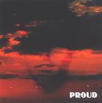

| Artist: | Finders Keepers |
| Title: | Proud |
| Label: | Artpop Records APR 01 CD |
| Length(s): | 58 minutes |
| Year(s) of release: | 2001 |
| Month of review: | [03/2002] |
| 1) | Proud | 6.20 |
| 2) | Personality | 4.21 |
| 3) | The Accordionplayer | 4.49 |
| 4) | The Tightrope Queen | 3.55 |
| 5) | 1000 Candles | 5.05 |
| 6) | C'est La Vie | 5.18 |
| 7) | Big Fame - Small Talk | 4.16 |
| 8) | Meet The Duke | 5.59 |
| 9) | Travelling To La Paz | 6.21 |
| 10) | Privet Life | 3.06 |
| 11) | Scarlet Eyes | 5.25 |
| 12) | Even Loosers Do | 3.14 |
The opening of Personality reminded me a lot of U2. The song is already known from the single. The vocals remind me of OMD (remember Maid Of Orleans?) and if you are looking for reference also think of The Simple Minds and Icehouse. There is a strong groove, but also some jazzy piano at the end. The Accordionplayer is more like a ballad, midtemp with some melancholy sax thrown in. The melody is a bit in the French style and might remind some of Roxy Music. The Tightrope Queen was already described in the single review. Now it strikes me as a bit of an easy-going song.
1000 Candles follows the same groove.: somewhat symphonic and thoroughly melodic pop songs in which the guitars can be quite heavy, the keyboards have an updated sound, the rhtyhms are modern the vocals give the songs a melancholy feel. In this song the long guitar solo is not only rather subdued, but also does not shy away from a bit of experimenting.
After a percussive opening we get a rhythmic repetitive pattern on the keys. The chorus is catchy and we have a backing ground choir to fill things up. In my opinion it could have a been a bit more fluent, it kind of hobbles along now. The rhythm guitar at the end is quite distinctive.
After Big Fame - Small Talk with its calm sparse verses we run into the tribute to David Bowie: Meet The Duke (the Thin White Duke as some might recall). This song is tense, almost threatening song with drawn out vocals. Very good. Travelling To La Paz is rather funky, becuse of the inclusion of a horn section. The guitar also helps.
Privet Life opens with trumpet and is a bit of a frolic tune. I was thinking of Blur here. Scarlet Eyes is one of those songs again that combines a modern rhythm with good melodies. The vocal melody is very moerable, the bass line seems to have been taken from Grandmaster Melle Mel's White Lines (Don't Do It).
The album closes with the melancholy ballad Even Loosers Do.